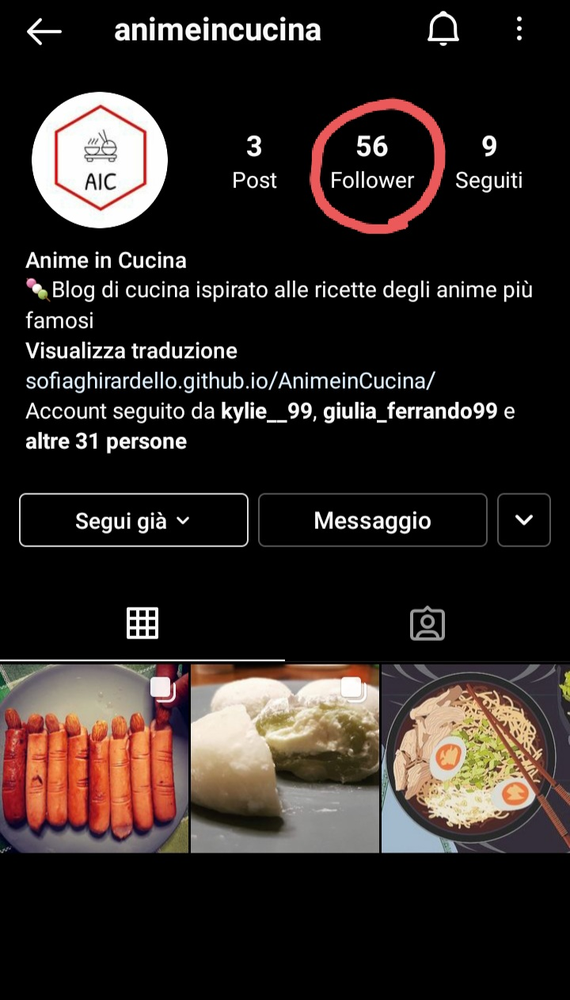
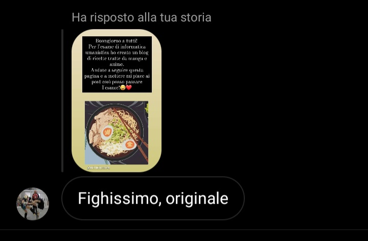
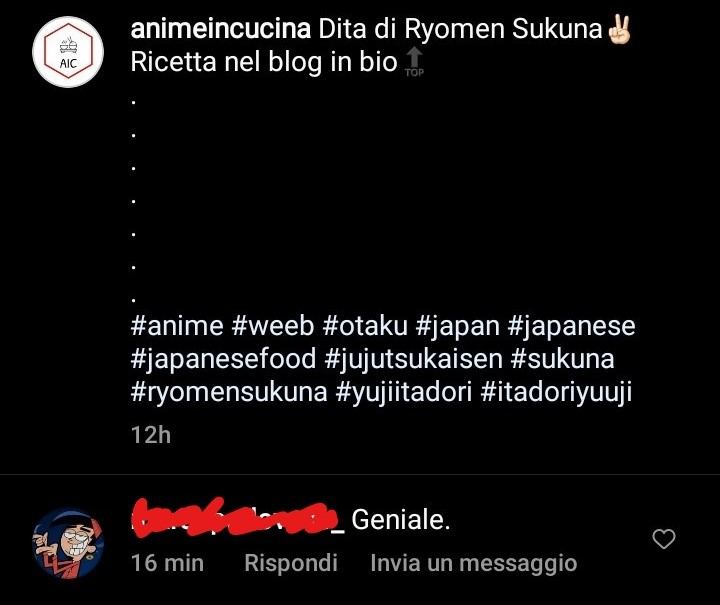
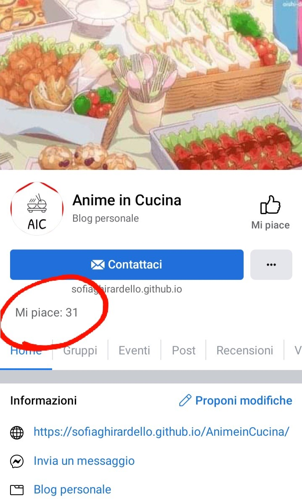
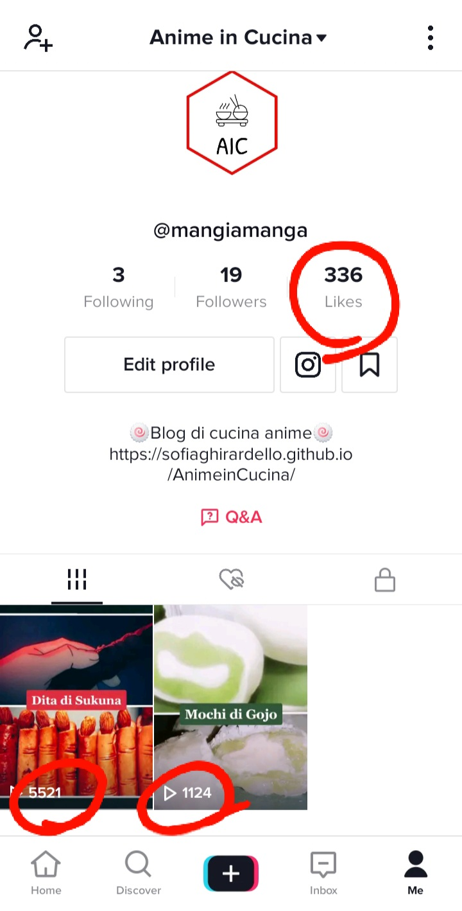
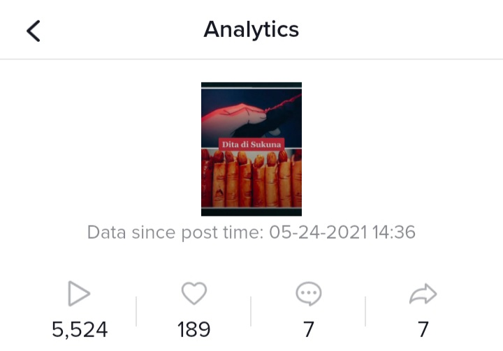
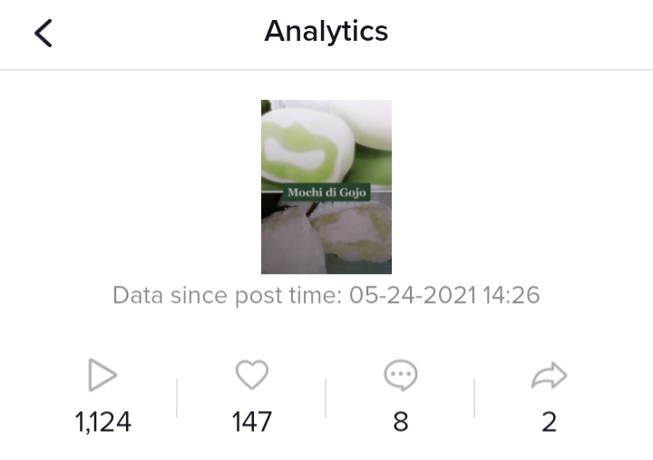

Anime in Cucina vuole portare sui fornelli ricette tratte da anime giapponesi. Questo blog nasce dal desiderio di condividere la mia passione per la cucina e l’animazione giapponese e di ispirare altri “otaku” a portare un po’ di creatività a tavola. L’organizzazione delle ricette in base all’anime di riferimento, la difficoltà minima delle preparazioni e la sua ramificazione in tre social diversi fanno sì che questo blog sia facile da navigare, da scoprire e adatto anche a principianti. Il target principale sono gli appassionati di manga e anime ed è rivolto specialmente agli under 45.
PROJECT MANAGEMENT PLAN
BENCHMARKING
OBIETTIVI E TARGET Anime in Cucina è una piattaforma rivolta agli amanti dell’animazione giapponese e a tutte quelle persone che hanno voglia di mettersi in gioco provando a ricreare piatti ispirati ad alcuni famosi anime.
Il cuore di questo progetto è quello portare le pietanze mostrate sul piccolo schermo in tavola, in modo che l’utente possa provare la sensazione di trovarsi all’interno delle sue storie preferite.
COMPETITORS:
Itadakimasuanime
PRO: molte ricette, procedimenti chiari
CONTRO: grafica obsoleta e organizzazione dei contenuti disordinata. Mancano foto del cibo reale e dei procedimenti, descrizioni troppo lunghe
Animerecipies
PRO: grafica pulita e intuitiva, responsive, ricette interessanti e ben descritte
CONTRO: difficoltà nella navigazione (troppo scrolling per arrivare ad una determinata ricetta), non è un vero sito ma un blog di Tumblr
Cookingwiththehamster
PRO: descrizioni brevi e concise
CONTRO: dispersivo, non tutti i link delle ricette funzionano, troppe immagini
In generale, i siti competitors sono ben costruiti da un punto di vista tematico e dei contenuti. Tuttavia non presentano pagine social volte alla promozione e l’organizzazione dei contenuti e le scelte grafiche risultano a volte molto confusionarie e poco usabili.
STRUTTURA E LAYOUT
ARCHITETTURA: Struttura del sito
WIREFRAME: Pagina homePagina animePagina ricetta
LOOK AND FEEL
La grafica del sito è stata progettata in modo da ricordare dei pannelli manga. Per fare ciò ho utilizzato forme spigolose con dei contorni neri spessi, dei pannelli manga come sfondo principale e un’immagine che ricorda la texture della carta per il background della header e delle sezioni del body.
Anche i colori principali (il bianco, il rosso, il nero) si rifanno allo stile in bianco e nero dei manga e ai colori della bandiera giapponese.
I font utilizzati sono Delius e Roboto Slab, scelti per la loro leggerezza e somiglianza al tratto tipico dei caratteri giapponesi.
Le immagini presenti nel sito sono state prese da Google immagini, Unsplash e immagini originali fatte dalla sottoscritta.
LINGUAGGI E STRUMENTI
Linguaggi: HTML5 e CSS
Strumenti: Sublime text 2.0, Bootstrap, w3schools, unsplash, Balsamiq, Fontawesome, Googlefonts, Jimdo (logo), Colorspace, Github
COMMUNICATION STRATEGY
BACKGROUND
Per facilitare la navigazione del sito e attirare più persone possibili, Anime in Cucina organizza le sue ricette in base all’anime di appartenenza e non in base al tipo di pasto (come è stato fatto dai siti competitors). Il perché di questa scelta sta nella tendenza degli utenti di ricercare piatti specifici che già conoscono piuttosto che provare nuove ricette sconosciute. In questo modo l’utente potrà prima di tutto concentrarsi su ciò che già conosce per poi eventualmente esplorare il resto del sito.
Anime in cucina è presente su tre social diversi: Facebook (indirizzato alle fasce di età più alte del target), Instagram (per le fasce più giovani) e Tiktok (per gruppi specifici di fan). Questo servirà a promuovere il sito e a creare uno spazio dedicato all’engagement con gli utenti.
OBIETTIVI
L’obiettivo principale di Anime in Cucina è di avvicinare gli appassionati di animazione giapponese alla cucina grazie a ricette semplici create con ingredienti facili da reperire.
Grazie a questo blog, gli utenti potranno mettere in gioco le loro abilità culinarie la loro creatività e interagire gli uni con gli altri nelle pagine social.
Tenendo conto della scarsità di ricette presenti nel sito in questo momento, come obiettivo numerabile vorrei raggiungere una media di 10 followers e likes su Instagram e Facebook e 50 visualizzazioni su Tiktok.
TARGET E MESSAGGIO
Questo sito è rivolto è principalmente gli appassionati di animazione giapponese. La fascia di età principale è under 45, perché la probabilità che queste persone conoscano anime è maggiore rispetto ad altri utenti di età superiore.
Il messaggio principale di Anime in Cucina è quello di far scoprire agli utenti ricette nuove e creative. Vorrei che le persone che proveranno a ricreare i piatti proposti nel sito possano avere l’impressione di mangiare assieme ai loro personaggi preferiti.
PROMOZIONE
La promozione di Anime in Cucina è avvenuta tramite la pubblicazione di foto e video sulle pagine social del sito e sui miei profili personali. Nelle pagine social di Facebook e Instagram sono stati pubblicati gli stessi contenuti mentre su tiktok sono stati creati dei piccoli video adatti alla comunicazione del social.
VALUTAZIONE
Ritengo che l’obiettivo comunicativo sia stato raggiunto. Sono stata piacevolmente sorpresa dal numero di utenti raggiunti grazie alla promozione social: la pagina Instagram conta 56 followers e una media di 52 likes per post e la pagina Facebook ha 31 followers e circa 10 mi piace per post. Tiktok è stata la piattaforma di maggiore successo: dopo solo poche ore dalla pubblicazione, i video hanno raggiunto un totale di 336 likes, 6600 visualizzazioni e 15 commenti.

Pagina Instagram
Commenti instagram
Pagina Facebook
Pagina Tiktok
Analisi tiktok